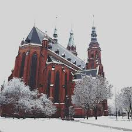

Places to visit
There are many places to go sightseeing within Legnica, take a stroll around the beautiful Municipal Park, or Bike the trail within it. Visit Piast castle which has been stood for over 750 years, or just visit the market within the old town district and see its historical significance for yourself.
Of course that is not all that Legnica has to offer, its charm lies within its historical architecture, which can be found just about everywhere within the city, for example Neptunes fountain within the market square, which is the oldest fountain in legnica.
If architecture is not for you, there is also the copper museum, which holds many exhibits from the past and can be a great insight into the finer details of the citys history.
Tourist accomodation
Despite not being as big of a tourist destination, there are plenty of hotels and places to stay at various prices in various locations. The majority of them are well rated and will ensure the best service they can offer, they can be found on a few websites such as Booking.com and are easy to get sorted.